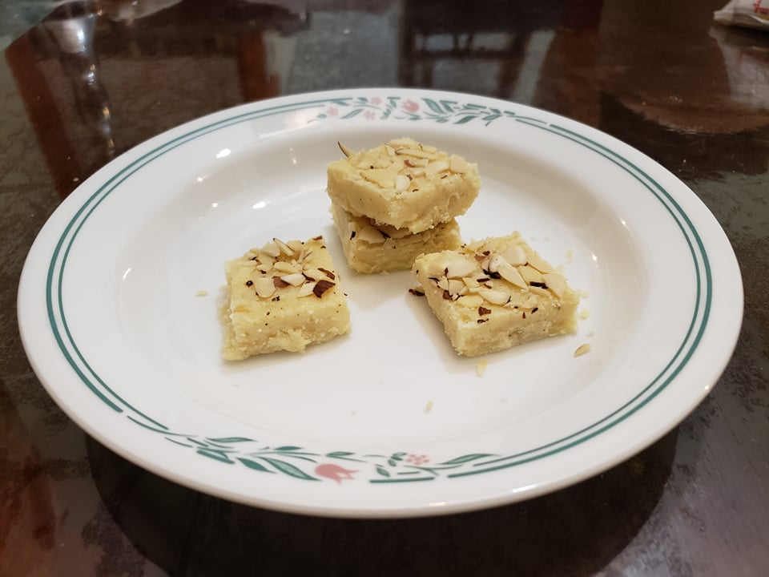

Barfi

Ingredients:
- 1/3 cup Ghee
- 1 cup Milk
- 3 cups Powdered milk
- 3/4 cup Sugar
- Optional: 1/4 tsp Ground cardamom
- 2 tbsp Almonds, chopped
Instructions:
- Heat the ghee in a large pan over low heat until the ghee is melted. Add in the milk while mixing continuously and heat until the milk starts to boil.
- Once the milk starts to bubble, start to mix in the milk powder. Mix in the powder in batches to prevent lumps. Stir continuously.
- Mix in the sugar. Stir continuously for about 10 minutes or until the mixture begins to start forming like a dough and is no longer sticking to the pan. To check if it is done, take a small piece of the mixture and give it a minute to cool. If it can easily be rolled into a ball then the mixture is ready.
- Add the cardamom powder, mix, and remove from heat.
- Transfer the mixture to a greased brownie pan. Smoothen the mixture with the back of a spoon or spatula.
- Sprinkle with the chopped almonds and then slightly press the almonds into the barfi.
- Let cool completely. Once cooled, cut into small squares and serve.